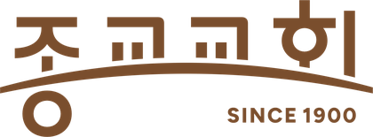
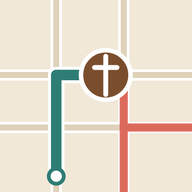

마라톤 날 주일 교통 안내

마라톤으로 고생하는 교인들을 위해 만든
교회로 가는 가장 빠른 길
출발 위치만 고르면, 지금 시각에 맞춰 통제 구간을 피해 들어오는 길을 알려 드려요.
✕

휴대폰 홈 화면에 앱으로 설치하기
1
어느 대회인가요?
대회 정보는 수동으로 등록합니다. 목록에 없어도 다른 통제가 있을 수 있으니
서울시 교통정보
를 확인해 주세요.
2
어디서 출발하세요?
📍 지금 내 위치에서 출발
또는 출발 지역 고르기
지도에서 직접 찍기
아래 지도에서 출발 위치를 눌러 주세요. (도심 안이면 '도심 지도'에서 찍으면 더 정확해요)
서울 전체
도심 지도
다른 시각에 출발하기
지금으로
길 찾기
교회 주변
출발지부터
추천 길
이 시간 통제
다른 시간 통제
길안내 앱 고르기
카카오맵으로 길안내
네이버 지도 내비로 길안내
티맵으로 길안내
교우들과 나누기
이 링크를 카카오톡 단톡방에 올려 주세요. 누구나 바로 열 수 있어요.
🔗 링크 공유하기
함께 알아 두세요
🚇
지하철이 가장 확실해요.
광화문역(5호선)·경복궁역(3호선)에서 걸어서 5분 안팎입니다. 운행 상황은 출발 전에 확인해 주세요.
🚌
버스는 우회·무정차가 많아요.
세종문화회관·시청앞 정류소는 대회 중 서지 않을 수 있어요. 문의는 120 다산콜센터.
📱
당일 실시간 통제
는 카카오톡 '서울경찰교통정보' 채널, 서울경찰청 교통정보센터(spatic.go.kr)에서 확인할 수 있어요.